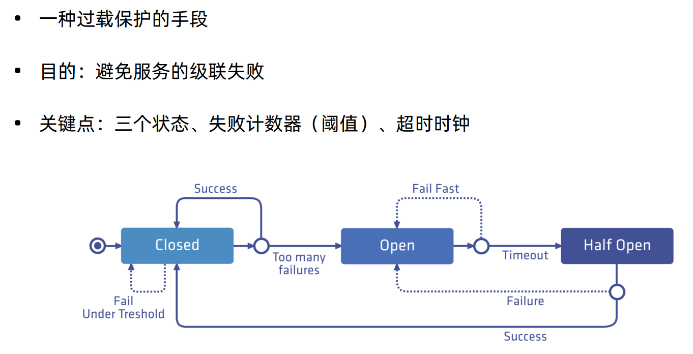

熔断，是创建弹性微服务应用程序的重要模式。熔断能够使您的应用程序具备应对来自故障、潜在峰值和其他未知网络因素影响的能力。

下面我们给httpbin来配置一个熔断，首先配置一个httpbin服务
1 # kubectl apply -f samples/httpbin/httpbin.yaml
接下来我们给httpbin配置一个熔断
1 2 3 4 5 6 7 8 9 10 11 12 13 14 15 16 17 18 19 20 $ kubectl apply -f - <<EOF apiVersion: networking.istio.io/v1alpha3 kind: DestinationRule metadata: name: httpbin spec: host: httpbin trafficPolicy: connectionPool: tcp: maxConnections: 1 http: http1MaxPendingRequests: 1 maxRequestsPerConnection: 1 outlierDetection: consecutiveErrors: 1 interval: 1s baseEjectionTime: 3m maxEjectionPercent: 100 EOF
创建客户端程序以发送流量到 httpbin 服务。这是一个名为 Fortio 的负载测试客户的，其可以控制连接数、并发数及发送 HTTP 请求的延迟。通过 Fortio 能够有效的触发前面 在 DestinationRule 中设置的熔断策略
1 2 3 4 5 6 [root@ VM-0 -13 -centos istio-1.5 .1 ]# kubectl apply -f samples/httpbin/sample-client/fortio-deploy.yaml service/fortio created deployment.apps/fortio-deploy created [root@ VM-0 -13 -centos istio-1.5 .1 ]# kubectl get pod | grep fortio fortio-deploy-6 dc9b4d7d9-9 x5z7 2 /2 Running 0 43 s
下面我们测试下通过fortio来给httpbin发送请求
1 2 3 4 5 6 7 8 9 10 11 12 13 14 15 16 17 18 19 20 21 22 23 24 25 [root@VM-0 -13 -centos istio-1.5 .1 ]# kubectl exec -it fortio-deploy-6 dc9b4d7d9-9 x5z7 -c fortio /usr/bin/fortio HTTP/1.1 200 OK server : envoydate : Fri, 04 Dec 2020 12 :17 :57 GMTcontent-type : application/json content-length: 587 access -control-allow-origin: *access -control-allow-credentials: true x-envoy-upstream-service-time : 37 { "args": {}, "headers": { "Content-Length": "0", "Host": "httpbin:8000", "User-Agent": "fortio.org/fortio-1.11.3", "X-B3-Parentspanid": "070afd311a4e532b", "X-B3-Sampled": "1", "X-B3-Spanid": "b3369d3b27c55b85", "X-B3-Traceid": "f08dc74221df6d07070afd311a4e532b", "X-Forwarded-Client-Cert": "By=spiffe://cluster.local/ns/default/sa/httpbin;Hash=2c501c6908e66700666a37f904f60943d6621533226c6d4890d691dbe3cef78b;Subject=\"\";URI=spiffe://cluster.local/ns/default/sa/default" }, "origin": "127.0.0.1", "url": "http://httpbin:8000/get" }
在 DestinationRule 配置中，您定义了 maxConnections: 1 和 http1MaxPendingRequests: 1。 这些规则意味着，如果并发的连接和请求数超过一个，在 istio-proxy 进行进一步的请求和连接时，后续请求或 连接将被阻止。
下面我们来测试下发送并发数为 2 的连接（-c 2），请求 20 次（-n 20）
1 2 3 4 5 6 7 8 9 10 11 12 13 14 15 16 17 18 19 20 21 22 23 24 25 26 27 28 29 30 31 32 33 34 35 [root@ VM-0 -13 -centos istio-1.5 .1 ]# kubectl exec -it fortio-deploy-6 dc9b4d7d9-9 x5z7 -c fortio -- /usr/bin/fortio load -c 2 -qps 0 -n 20 -loglevel Warning http: 12 :20 :12 I logger.go:127 > Log level is now 3 Warning (was 2 Info)Fortio 1.11 .3 running at 0 queries per second, 4 ->4 procs, for 20 calls: http: Starting at max qps with 2 thread(s) [gomax 4 ] for exactly 20 calls (10 per thread + 0 ) 12 :20 :12 W http_client.go:693 > Parsed non ok code 503 (HTTP/1.1 503 )12 :20 :12 W http_client.go:693 > Parsed non ok code 503 (HTTP/1.1 503 )12 :20 :12 W http_client.go:693 > Parsed non ok code 503 (HTTP/1.1 503 )12 :20 :12 W http_client.go:693 > Parsed non ok code 503 (HTTP/1.1 503 )12 :20 :12 W http_client.go:693 > Parsed non ok code 503 (HTTP/1.1 503 )12 :20 :12 W http_client.go:693 > Parsed non ok code 503 (HTTP/1.1 503 )12 :20 :12 W http_client.go:693 > Parsed non ok code 503 (HTTP/1.1 503 )12 :20 :12 W http_client.go:693 > Parsed non ok code 503 (HTTP/1.1 503 )12 :20 :12 W http_client.go:693 > Parsed non ok code 503 (HTTP/1.1 503 )Ended after 51.733608 ms : 20 calls. qps=386.6 Aggregated Function Time : count 20 avg 0.0050693187 +/- 0.009171 min 0.000166044 max 0.034073146 sum 0.101386374 # range, mid point, percentile, count >= 0.000166044 <= 0.001 , 0.000583022 , 40.00 , 8 > 0.002 <= 0.003 , 0.0025 , 55.00 , 3 > 0.003 <= 0.004 , 0.0035 , 80.00 , 5 > 0.004 <= 0.005 , 0.0045 , 85.00 , 1 > 0.006 <= 0.007 , 0.0065 , 90.00 , 1 > 0.025 <= 0.03 , 0.0275 , 95.00 , 1 > 0.03 <= 0.0340731 , 0.0320366 , 100.00 , 1 # target 50 % 0.00266667 # target 75 % 0.0038 # target 90 % 0.007 # target 99 % 0.0332585 # target 99.9 % 0.0339917 Sockets used: 11 (for perfect keepalive, would be 2 ) Jitter: false Code 200 : 11 (55.0 %) Code 503 : 9 (45.0 %) Response Header Sizes : count 20 avg 126.55 +/- 114.5 min 0 max 231 sum 2531 Response Body/Total Sizes : count 20 avg 557.85 +/- 286.6 min 241 max 818 sum 11157 All done 20 calls (plus 0 warmup) 5.069 ms avg, 386.6 qps
Code 200 : 11 (55.0 %)
我们接着测试下3个并发执行30次
1 2 3 4 5 6 7 8 9 10 11 12 13 14 15 16 17 18 19 20 21 22 23 24 25 26 27 28 29 30 31 32 33 34 35 36 37 38 39 40 41 [root@ VM-0 -13 -centos istio-1.5 .1 ]# kubectl exec -it fortio-deploy-6 dc9b4d7d9-9 x5z7 -c fortio -- /usr/bin/fortio load -c 3 -qps 0 -n 30 -loglevel Warning http: 12 :22 :06 I logger.go:127 > Log level is now 3 Warning (was 2 Info)Fortio 1.11 .3 running at 0 queries per second, 4 ->4 procs, for 30 calls: http: Starting at max qps with 3 thread(s) [gomax 4 ] for exactly 30 calls (10 per thread + 0 ) 12 :22 :06 W http_client.go:693 > Parsed non ok code 503 (HTTP/1.1 503 )12 :22 :06 W http_client.go:693 > Parsed non ok code 503 (HTTP/1.1 503 )12 :22 :06 W http_client.go:693 > Parsed non ok code 503 (HTTP/1.1 503 )12 :22 :06 W http_client.go:693 > Parsed non ok code 503 (HTTP/1.1 503 )12 :22 :06 W http_client.go:693 > Parsed non ok code 503 (HTTP/1.1 503 )12 :22 :06 W http_client.go:693 > Parsed non ok code 503 (HTTP/1.1 503 )12 :22 :06 W http_client.go:693 > Parsed non ok code 503 (HTTP/1.1 503 )12 :22 :06 W http_client.go:693 > Parsed non ok code 503 (HTTP/1.1 503 )12 :22 :06 W http_client.go:693 > Parsed non ok code 503 (HTTP/1.1 503 )12 :22 :06 W http_client.go:693 > Parsed non ok code 503 (HTTP/1.1 503 )12 :22 :06 W http_client.go:693 > Parsed non ok code 503 (HTTP/1.1 503 )12 :22 :06 W http_client.go:693 > Parsed non ok code 503 (HTTP/1.1 503 )12 :22 :06 W http_client.go:693 > Parsed non ok code 503 (HTTP/1.1 503 )12 :22 :06 W http_client.go:693 > Parsed non ok code 503 (HTTP/1.1 503 )12 :22 :06 W http_client.go:693 > Parsed non ok code 503 (HTTP/1.1 503 )12 :22 :06 W http_client.go:693 > Parsed non ok code 503 (HTTP/1.1 503 )Ended after 57.165625 ms : 30 calls. qps=524.79 Aggregated Function Time : count 30 avg 0.0035633327 +/- 0.007463 min 0.000232569 max 0.031839734 sum 0.106899982 # range, mid point, percentile, count >= 0.000232569 <= 0.001 , 0.000616284 , 46.67 , 14 > 0.001 <= 0.002 , 0.0015 , 53.33 , 2 > 0.002 <= 0.003 , 0.0025 , 83.33 , 9 > 0.003 <= 0.004 , 0.0035 , 86.67 , 1 > 0.005 <= 0.006 , 0.0055 , 93.33 , 2 > 0.03 <= 0.0318397 , 0.0309199 , 100.00 , 2 # target 50 % 0.0015 # target 75 % 0.00272222 # target 90 % 0.0055 # target 99 % 0.0315638 # target 99.9 % 0.0318121 Sockets used: 17 (for perfect keepalive, would be 3 ) Jitter: false Code 200 : 14 (46.7 %) Code 503 : 16 (53.3 %) Response Header Sizes : count 30 avg 107.4 +/- 114.8 min 0 max 231 sum 3222 Response Body/Total Sizes : count 30 avg 509.86667 +/- 287.4 min 241 max 818 sum 15296 All done 30 calls (plus 0 warmup) 3.563 ms avg, 524.8 qps
Code 200 : 14 (46.7 %)
1 2 3 4 5 6 7 8 9 10 11 12 13 14 15 16 17 18 19 20 21 22 23 24 25 26 27 28 29 30 31 [root@VM-0 -13 -centos istio-1.5 .1 ]# kubectl exec fortio-deploy-6 dc9b4d7d9-9 x5z7 -c istio-proxy cluster .outbound|15443 |httpbin|istio-egressgateway.istio-system .svc.cluster .local .circuit_breakers.default .rq_pending_open: 0 cluster .outbound|15443 |httpbin|istio-egressgateway.istio-system .svc.cluster .local .circuit_breakers.high.rq_pending_open: 0 cluster .outbound|15443 |httpbin|istio-egressgateway.istio-system .svc.cluster .local .upstream_rq_pending_active: 0 cluster .outbound|15443 |httpbin|istio-egressgateway.istio-system .svc.cluster .local .upstream_rq_pending_failure_eject: 0 cluster .outbound|15443 |httpbin|istio-egressgateway.istio-system .svc.cluster .local .upstream_rq_pending_overflow: 0 cluster .outbound|15443 |httpbin|istio-egressgateway.istio-system .svc.cluster .local .upstream_rq_pending_total: 0 cluster .outbound|443 |httpbin|istio-egressgateway.istio-system .svc.cluster .local .circuit_breakers.default .rq_pending_open: 0 cluster .outbound|443 |httpbin|istio-egressgateway.istio-system .svc.cluster .local .circuit_breakers.high.rq_pending_open: 0 cluster .outbound|443 |httpbin|istio-egressgateway.istio-system .svc.cluster .local .upstream_rq_pending_active: 0 cluster .outbound|443 |httpbin|istio-egressgateway.istio-system .svc.cluster .local .upstream_rq_pending_failure_eject: 0 cluster .outbound|443 |httpbin|istio-egressgateway.istio-system .svc.cluster .local .upstream_rq_pending_overflow: 0 cluster .outbound|443 |httpbin|istio-egressgateway.istio-system .svc.cluster .local .upstream_rq_pending_total: 0 cluster .outbound|8000 ||httpbin.default .svc.cluster .local .circuit_breakers.default .rq_pending_open: 0 cluster .outbound|8000 ||httpbin.default .svc.cluster .local .circuit_breakers.high.rq_pending_open: 0 cluster .outbound|8000 ||httpbin.default .svc.cluster .local .upstream_rq_pending_active: 0 cluster .outbound|8000 ||httpbin.default .svc.cluster .local .upstream_rq_pending_failure_eject: 0 cluster .outbound|8000 ||httpbin.default .svc.cluster .local .upstream_rq_pending_overflow: 25 cluster .outbound|8000 ||httpbin.default .svc.cluster .local .upstream_rq_pending_total: 26 cluster .outbound|80 |httpbin|istio-egressgateway.istio-system .svc.cluster .local .circuit_breakers.default .rq_pending_open: 0 cluster .outbound|80 |httpbin|istio-egressgateway.istio-system .svc.cluster .local .circuit_breakers.high.rq_pending_open: 0 cluster .outbound|80 |httpbin|istio-egressgateway.istio-system .svc.cluster .local .upstream_rq_pending_active: 0 cluster .outbound|80 |httpbin|istio-egressgateway.istio-system .svc.cluster .local .upstream_rq_pending_failure_eject: 0 cluster .outbound|80 |httpbin|istio-egressgateway.istio-system .svc.cluster .local .upstream_rq_pending_overflow: 0 cluster .outbound|80 |httpbin|istio-egressgateway.istio-system .svc.cluster .local .upstream_rq_pending_total: 0 cluster .outbound|80 ||httpbin.org.circuit_breakers.default .rq_pending_open: 0 cluster .outbound|80 ||httpbin.org.circuit_breakers.high.rq_pending_open: 0 cluster .outbound|80 ||httpbin.org.upstream_rq_pending_active: 0 cluster .outbound|80 ||httpbin.org.upstream_rq_pending_failure_eject: 0 cluster .outbound|80 ||httpbin.org.upstream_rq_pending_overflow: 0 cluster .outbound|80 ||httpbin.org.upstream_rq_pending_total: 0
cluster.outbound|8000||httpbin.default.svc.cluster.local.upstream_rq_pending_overflow: 25 这意味着，目前为止已有25个调用被标记为熔断
欢迎访问 Vashon 的博客，博客和文章在完善中，请大家耐心等待。 若有问题或者有好的建议欢迎留言，笔者看到之后会及时回复。
为正常使用来必力评论功能请激活JavaScript